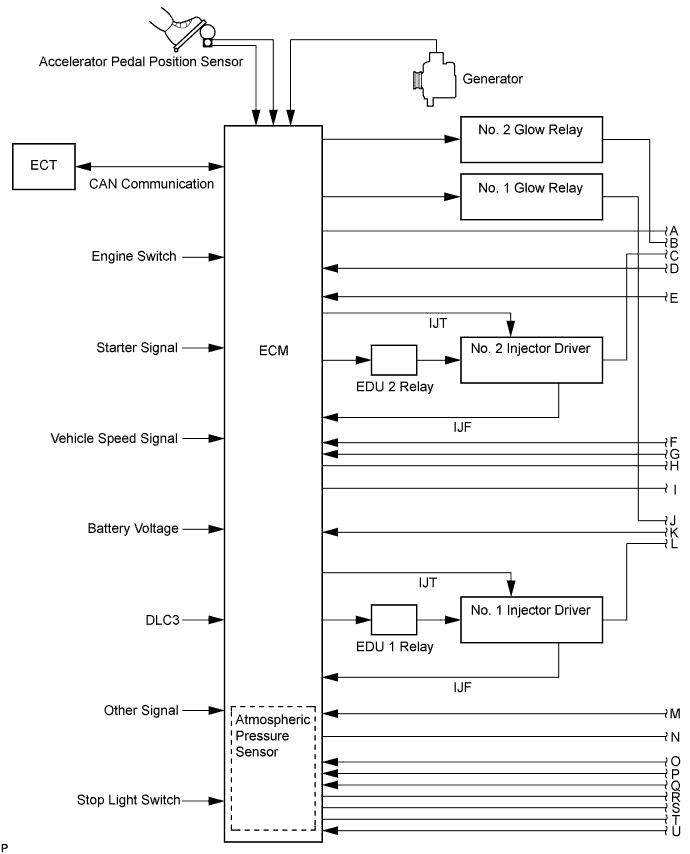
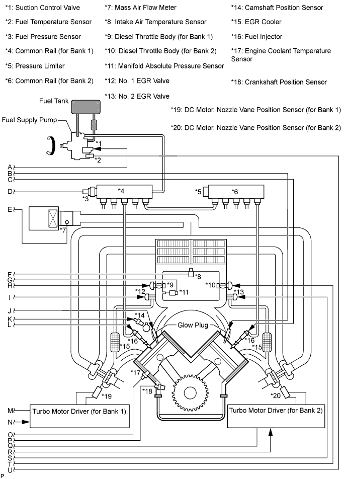
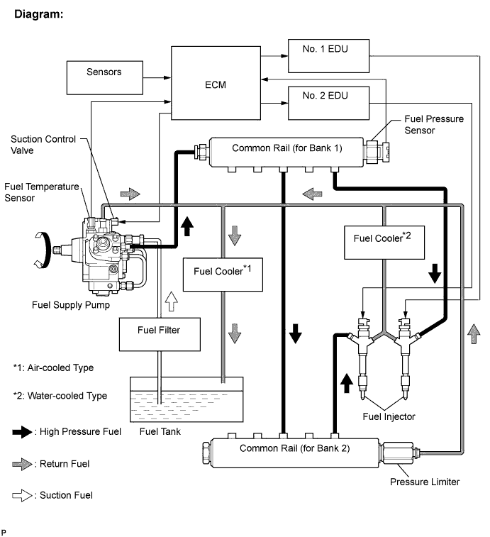
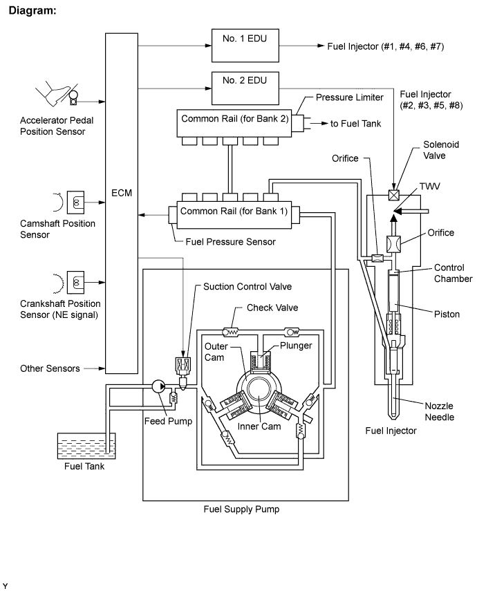
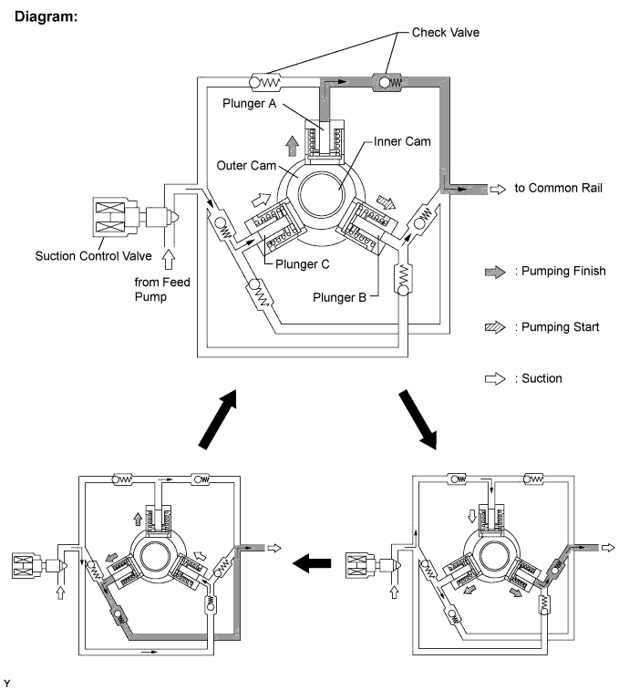
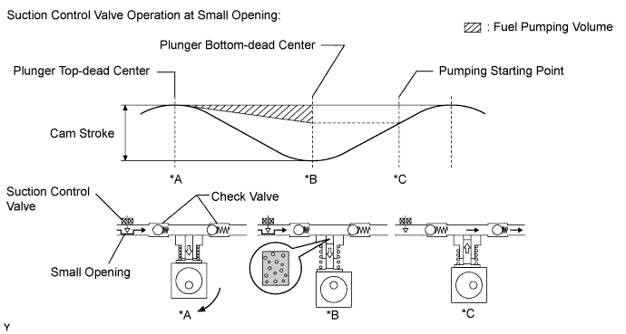
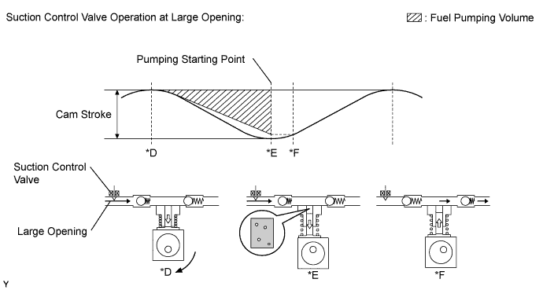

ECD SYSTEM > SYSTEM DESCRIPTION |
| SYSTEM DIAGRAM |


| COMMON RAIL INJECTION SYSTEM |

| Component | Description |
| Common rail | Stores high-pressure fuel produced by fuel supply pump |
| Fuel supply pump | Operated by crankshaft. Supplies high-pressure fuel to common rail. |
| Fuel injector | Injects fuel to combustion chamber based on signals from ECM |
| Fuel pressure sensor | Monitors internal fuel pressure of common rail and sends signals to ECM |
| Pressure limiter | Opens pressure limiter valve to reduce internal pressure in common rail when common rail pressure exceeds specified level |
| Suction control valve | Based on signals from ECM, adjusts fuel volume supplied to common rail and regulates internal fuel pressure |
| Component | Trouble Area | DTC No. |
| Fuel injector | Open or short in fuel injector circuit | P062D, P062E, P1238, P0093* |
| Stuck open | P0093, P1238 | |
| Stuck closed | P1238 | |
| Fuel pressure sensor | Open or short in fuel pressure sensor circuit or pressure sensor output fixed | P0087, P0190, P0192, P0193 |
| Pressure limiter | Stuck open | P0093 |
| Stuck closed | P0088* | |
| Suction control valve | Open or short in suction control valve circuit | P0627, P1229, P0088* |
| Stuck open | P1229, P0088* | |
| Stuck closed | - | |
| Injector driver (EDU) | Faulty EDU | P0093*, P062D*, P062E*, P1238* |
| Common rail system (Fuel system) | Fuel leaks in high-pressure areas | P0093 |
| DTC No. | Description |
| P0087 | Fuel pressure sensor output does not change |
| P0088 | Internal fuel pressure too high (230 MPa [2345 kgf/cm2, 33350 psi] or more) |
| P0093 | Fuel leaks in high-pressure areas |
| P0190 | Open or short in fuel pressure sensor circuit (Low or high output) |
| P0192 | Open or short in fuel pressure sensor circuit (Low output) |
| P0193 | Open or short in fuel pressure sensor circuit (High output) |
| P062D | Open or short in No. 1 injector driver or fuel injector circuit |
| P062E | Open or short in No. 2 injector driver or fuel injector circuit |
| P0627 | Open or short in suction control valve circuit |
| P1229 | Fuel over-feed |
| P1238 | Injection malfunction; excludes open or short in fuel injector circuit |
| P1601 | Fuel injector compensation code malfunction |
| INJECTION CONTROL |

| FUEL SUPPLY PUMP |

| SUCTION CONTROL VALVE |
Small opening of the suction control valve:
When the opening of the suction control valve is small, the fuel suction path is kept narrow. Therefore the transferable fuel volume is reduced*A.
The suction volume becomes small due to the narrow path despite the plunger stroke being full. The difference between the geometrical volume and suction volume creates a vacuum*B.
Pumping will start when the fuel pressure becomes higher than the common rail pressure*C.

Large opening of the suction control valve:
When the opening of the suction control valve is large, the fuel suction path is kept wide. Therefore the transferable fuel volume is increased*D.
If the plunger stroke is full, the suction volume becomes large because of the wide path*E.
Pumping will start when the fuel pressure becomes higher than the common rail pressure*F.
